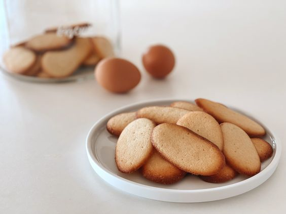

직역하면 '고양이의 혀'를 뜻하며, 이름처럼 길쭉하고 얇은 타원형의 쿠키를 가리킨다. 마찬가지로 밀가루를 사용한 사블레나 비스킷에 비해 더 부드럽게 바삭거리는 식감이 특징. 기본적으로 부드럽게 풀어준 버터에 균일한 양의 밀가루와 설탕을 섞은 다음 계란 흰자를 섞어서 반죽을 만들고, 취향에 따라 소금, 바닐라빈, 바닐라 에센스 등을 섞을 수 있다. 버터를 바른 베이킹 시트에 반죽을 작은 막대 모양으로 짜주고 오븐에서 몇 분 구워주면 완성. 그냥 먹어도 초콜릿을 발라줘도 상관없다.
독일과 오스트리아에서는 이 과자를 초콜릿으로 코팅한 '카첸중겐(Katzenzungen)'이라는 제품이 1892년부터 생산되고 있으며, 이름은 마찬가지로 '고양이 혀'를 뜻한다. 일본에서도 높은 인기를 자랑하는데, 여기서는 본고장과는 달리 주로 반듯한 원형이나 사각형으로 만들어진다. 이를 이용해 시로이코이비토 같은 특산품 과자가 파생되기도 했으며, 쿠크다스의 원조가 되는 '쿠크다세(クックダッセ)'가 파생되기도 했다.